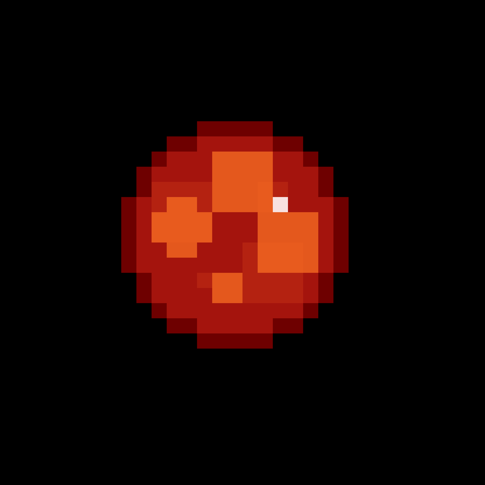

55 Cancri e är lik jorden eftersom de har ungefär samma storlek och de innehåller mycket sten. Däremot har 55 Cancri e många stora skillnader. Planetens yta är täckt av ett hav av flytande lava. Det gör det möjligt för diamanter att bildas eftersom det behövs väldigt höga temperaturer och mycket hög tryck under lång tid. Vilket har hittats på denna planet.